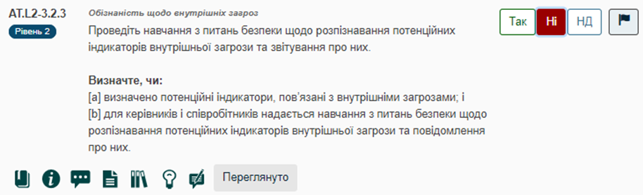

Практики СММ: Макет опитувальника
Пояснення до рисунку:
|
Кожна практика має ідентифікаційний номер практики у форматі - PE.L#-REQ, де: •DD - дволітерна абревіатура домену; •- L# - номер рівня; •- REQ - номер вимоги до безпеки NIST SP 800-171 Rev 2 або NIST SP 800-172.
|
Вказує на відповідний цільовий рівень практики СММ для вибраного домену. CMMC є еталоном моделі зрілості кібербезпеки, за яким організація може оцінити поточний рівень ефективності своїх процесів, практик і методів, а також встановити цілі та пріоритети для вдосконалення.
|
У розділі "2.2.3. Компоненти CMMC 2.0 оцінювання у CSET" наведено детальний опис кожної піктограми CSET, а також інформацію про результат активації дій по кожній з них, які здійснюються користувачем під час проведення оцінювання.
|
Результати оцінювання СММС у CSET фіксуються у спеціальному інструментарії оцінювання - МЕТ.
У МЕТ результат оцінювання представлений як ТАК: вибрана практика підрядником виконується. Для кожної практики в опитувальнику включаються твердження, які вказують, що відповідь відповідає цілям, і документуються відповідні докази, які підтверджують цю відповідь. Для результату опитування ТАК експерт може активувати дії по піктограмі "Спостереження" (див. "2.2.3. Компоненти CMMC 2.0 оцінювання у CSET") для запису відповідних спостережень.
Для кожної такої практики експерт додає пояснення про те, чому практика не виконується, а також відповідне документальне підтвердження. Для результату опитування НІ експерт може активувати дії по піктограмі "Спостереження" (див. "2.2.3. Компоненти CMMC 2.0 оцінювання у CSET") для запису відповідних спостережень. 
У МЕТ результат оцінювання представлений як Н/Д (непридатна): вибрана практика не застосовується підрядником. Для кожної практики з таким результатом експерт повинен додати пояснення, чому ця практика не застосвується підрядником.. Коментарі експерта можуть бути записані у відповідних полях при активації дій по піктограмі "Спостереження" (див. "2.2.3. Компоненти CMMC 2.0 оцінювання у CSET").
|
Індикатор виконання стане синім і замкнеться в коло по мірі того, як користувач відповідатимете на запитання в кожній практиці. Після завершення процесу оцінювання на Індикаторі виконання з'явиться прапорець (P). |

підготовлено у редакторі Help & Manual 9.3.0